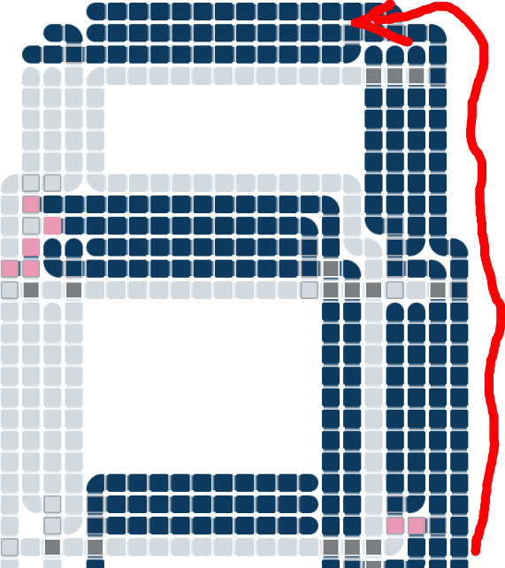
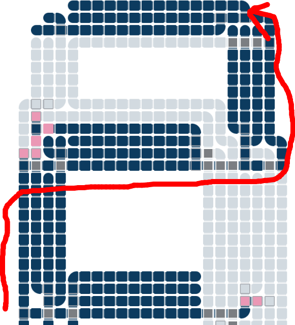
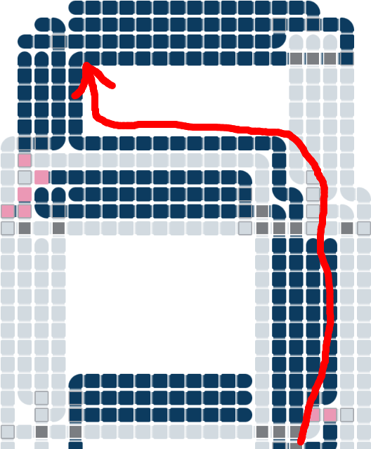

この記事はセルオートマトンによるCPU作成連載記事の8つ目です。(2022/12/16)
7セグメントディスプレイを作ってみました。
7セグメントディスプレイは電卓や体温計などで使われる、四角い、いかにもデジタルな感じの数字です。8の字型に直線7個が配置されています。各直線をセグメントと言い、それが7つあるので7セグメントディスプレイと言います。
現実世界でのディスプレイはCPUの外にあるLEDなどの別の素子で表示させますが、このセルオートマトンの世界ではCPUを流れる信号が見えるのでそれをそのまま表示器に利用しています。
このディスプレイでは下から信号を流しています。信号の伝達経路自体も見えてしまいますので、表示中のセグメントに隣接させ、すべての信号伝達経路をそれ自体セグメントと兼ねさせています。信号線の幅があるため表示する数字は不格好です。
 
難しいのは、上半分のセグメントへの信号をどう伝えるかです。下にある表示中のセグメントに沿って信号を伝達したいのですが、そうなると数字によって伝達経路が変わってきます。一番上のセグメントは、 "3" では右の辺を下から上まで通ればよいですが、 "2" ではいったん左の辺を通り中央を右に渡る必要があります。 "5" は逆にいったん右の辺を通り中央を左に渡る必要があります。経路が3パターンあるわけです。
同様に、上半分の縦棒2つはそれぞれ経路が2パターンあります。中央の横棒も経路が2パターンあります。下半分の経路は1パターンのみです。合計で信号経路は12本あることになります。
すべての表示パターンを網羅する必要はなく10種類の数字さえ表示できればよいので、12本のうち一部信号線は集約できます。その結果、8本の信号線による制御となりました。複数の信号線を経路の途中まで重複させるわけです。
この回路は、下に8個のボタンがありますので、試すことができます。
どのボタンを押せば目的の数字が表示されるのかを回路だけ見て判断するのは難しいです。次の表を参考にしてください。
| 数字 | 入力 | 表示セグメント |
|---|---|---|
| 非表示 | C, E, G, H | なし |
| 0 | B, E | 上、左上、右上、左下、右下、下 |
| 1 | C, E, H | 右上、右下 |
| 2 | A, B, E, G, H | 上、右上、中、左下、下 |
| 3 | D | 上、右上、中、右下、下 |
| 4 | C, H | 左上、右上、中、右下 |
| 5 | F, G, H | 上、左上、中、右下、下 |
| 6 | B, F, G, H | 上、左上、中、左下、右下、下 |
| 7 | C, E | 上、右上、右下 |
| 8 | B または B, F | 上、左上、右上、中、左下、右下、下 |
| 9 | 入力なし または F | 上、左上、右上、中、右下、下 |
各セグメントの表示ロジックは次の通りです。
| セグメント | 表示条件 |
|---|---|
| 上 | A or F or NOT H |
| 左上 | (NOT A and 左下) or (NOT 左下 and 中 and NOT D) |
| 右上 | A or NOT G |
| 中 | A or NOT E |
| 左下 | B |
| 右下 | NOT (A or (E and G)) |
| 下 | NOT C |
マイナス符号を表示することはできません。マイナスは中央の横棒のみとなり、空中に浮いていて下から信号を伝えることができないので、今回のこのディスプレイのコンセプトでは不可能です。